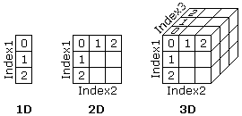

Hilfe
Dim


Aufruf
Parameter
Rückgabewert
Beschreibung
* Eindimensionales Feld wie Dim Stundenplan$(7) kann man sich als eine Reihe von Werten vorstellen. So kann man z.B. einen Stundenplan mit max. 8 Fächern für einen Tag erstellen.
* Zweidimensionales Feld wie Dim Stundenplan$(7,4) kann man sich wie eine Tabelle vorstellen. Man kann damit einen Stundenplan für 5 ganze Tage merken.
* Dreidimensionales Feld wie Dim Stundenplan$(7,4,11) kann als Tabelle mit mehreren Blätter vorgestellt werden. So kann man z.B. Stundenpläne für 12 Klassen speichern.
* Weiterhin können auch Felder mit mehr als drei Dimensionen erstellt werden. Dies wird allerdings selten gebraucht und sollte überlegt eingesetzt werden.
Beispiel
Siehe auch
Dim variable$ (index1, index2 ...)
Parameter
| variable$ | Die Variable über den das Dim Feld angesprochen werden soll |
| index | Größe, die die Anzahl der Einträge kennzeichnet |
Rückgabewert
-
Beschreibung
Diese Anweisung definiert ein Feld. Ein Feld ist eine Ansammlung von vielen Variablen. Dabei kann man nicht nur Integer, sondern auch Float- und Stringfelder definieren. Es können auch mehrdimensionale Felder erzeugt werden. Hier einige Beispiele, um den Begriff "Dimension" besser zu verstehen:

* Eindimensionales Feld wie Dim Stundenplan$(7) kann man sich als eine Reihe von Werten vorstellen. So kann man z.B. einen Stundenplan mit max. 8 Fächern für einen Tag erstellen.
* Zweidimensionales Feld wie Dim Stundenplan$(7,4) kann man sich wie eine Tabelle vorstellen. Man kann damit einen Stundenplan für 5 ganze Tage merken.
* Dreidimensionales Feld wie Dim Stundenplan$(7,4,11) kann als Tabelle mit mehreren Blätter vorgestellt werden. So kann man z.B. Stundenpläne für 12 Klassen speichern.
* Weiterhin können auch Felder mit mehr als drei Dimensionen erstellt werden. Dies wird allerdings selten gebraucht und sollte überlegt eingesetzt werden.
Ein Dim Feld fängt immer ab 0 an. Somit kann Dim feld(49) nicht 49, sondern 50 Einträge speichern (0-49).
Ein neues Feld kann nur im Hauptprogramm definiert werden. Dabei wird so ein Feld automatisch global definiert - d.h. es kann auch in den Funktionen ausgelesen oder verändert werden. Ein Feld lässt sich mit nachfolgenden Dim Befehlen in der Größe verändern - allerdings werden dabei alle Daten wieder gelöscht (so kann man auch Speicher wieder freigeben). Diese Methode funktioniert auch in Funktionen.
Beachte, dass dadurch jedes Mal Speicher reserviert wird. Die Felder sollen möglichst klein sein. Dies wird besonders von Anfängern nicht beachtet. So wird mit dem Befehl Dim Feld(99,99,99) ein Feld erstellt, das genau 1000000 Werte aufnehmen kann! Da ein Feld immer ab Null anfängt, und dadurch jeder Index in dem Beispiel eine "Tiefe" von 100 hat, ergibt sich nach der Rechnung: 100*100*100=1000000. Jeder Eintrag verbraucht aber wiederum Speicher. So braucht man 4 Byte, um einen Integerwert zu speichern. Dadurch ergibt sich in unserem Beispiel eine benötigte Speichergröße von min. 4000000 Byte - oder 3,81 MegaByte!!! Durch solche kleine "Fehler" kann man einen schwachen Rechner sogar verlangsamen, da die notwendigen Daten aus dem Speicher auf die langsame Festplatte verbannt werden können.
Beispiel
Dieses Beispiel erstellt einen Regen. Die Koordinate für Punkte werden in Feldern abgespeichert:
Graphics 640,480,0,1
SetBuffer BackBuffer ()
Dim x(100), y(100), v(100)
For i = 0 To 100
x(i) = Rnd (0,639)
y(i) = Rnd (0,479)
v(i) = Rnd (1,10)
Next
While KeyHit (1) = 0
Cls
For i = 0 To 100
y(i) = y(i) + v(i)
If y(i) > 479 Then y(i) = 0 : v(i) = Rnd (1,10)
Plot x(i),y(i)
Next
Flip
Wend
SetBuffer BackBuffer ()
Dim x(100), y(100), v(100)
For i = 0 To 100
x(i) = Rnd (0,639)
y(i) = Rnd (0,479)
v(i) = Rnd (1,10)
Next
While KeyHit (1) = 0
Cls
For i = 0 To 100
y(i) = y(i) + v(i)
If y(i) > 479 Then y(i) = 0 : v(i) = Rnd (1,10)
Plot x(i),y(i)
Next
Flip
Wend
Siehe auch
After, Before, Field, Delete, Each, Insert, End Type, First, Last, Type